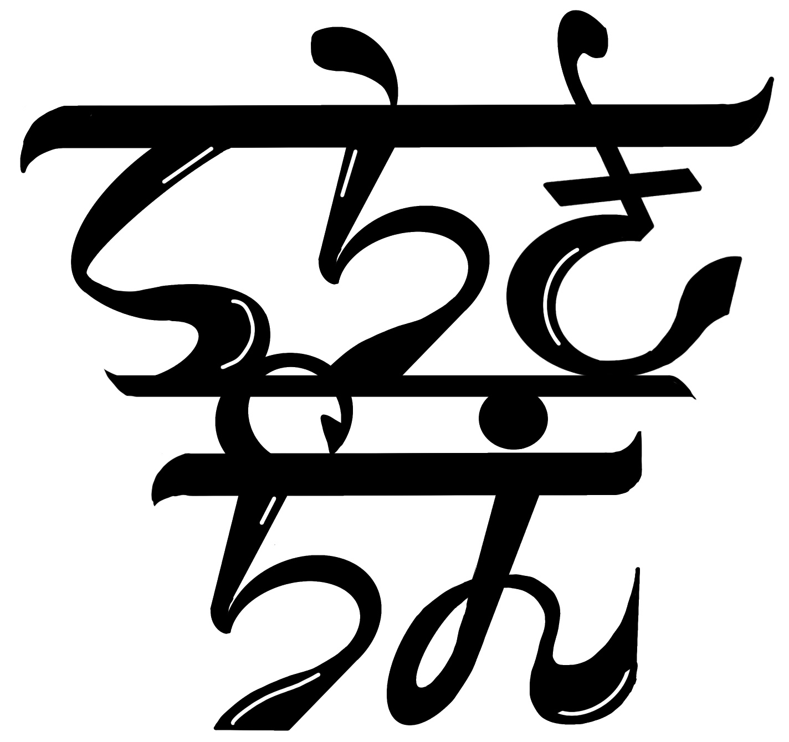

寺木 千絵（てらき ちえ）
埼玉県在住
- 1995年 東京生まれ
-
2016年 武蔵野美術大学 テキスタイル専攻卒業
卒業制作では同専攻(約50名)の中から優秀賞を受賞 - 2016年 パチンコ関係のライター
- 2025年〜 全国各地の旅先で停泊
- 2025年 求職中

自己紹介
好奇心旺盛で常に新しいものを求めている。
特技は早寝早起き。
ゲテモノ料理（特に昆虫食）が好きです。
歩くことも大好きなで、疲れていてもついつい歩いてしまう。
前向きで新しいことに挑戦していくことをモットーに、日々を生きています。
個展
2016
ZEN展 (優秀賞受賞)
東京都美術館
2017
ZEN展
埼玉県立美術館